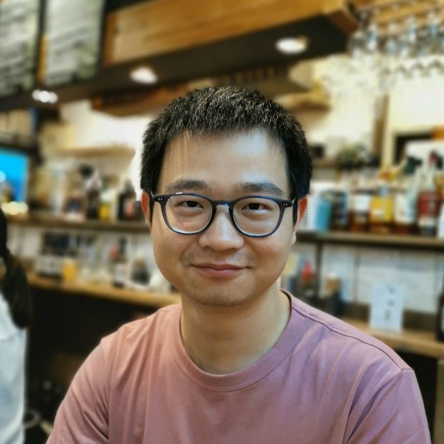

|  |
the Netherlands |
I am currently an On Product Performance Engineer at ASML, the Netherlands. I was a Marie Curie Postdoctoral Fellow at the Chair of Information-Oriented Control (ITR), Technical University of Munich (TUM), Germany, working with Professor Sandra Hirche. From 2020 to 2022, I was a Postdoctoral researcher at the same Chair. In 2020, I obtained my Ph.D. degree in Applied Mathematics (Systems and Control) from the University of Groningen, The Netherlands. My Ph.D. research was supervised by Professor Harry Trentelman and Professor Kanat Camlibel.